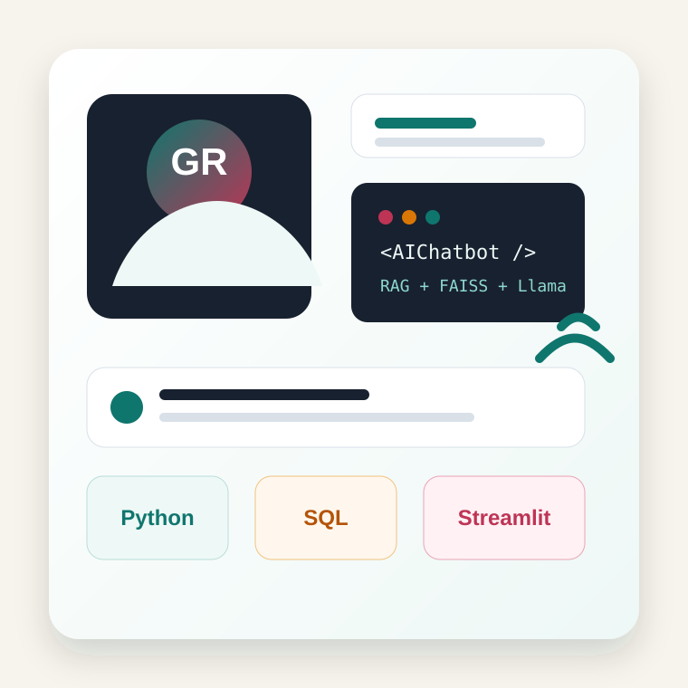

MCA Student | AI/ML Builder | Python Developer
Goutham R.R builds practical AI tools with clean interfaces.
I am Goutham R.R, based in Bangalore. I work with Python, SQL, Streamlit, LangChain, FAISS, and Llama-powered workflows to build useful systems like multilingual document chatbots and real-time AI applications.

Selected Work
Projects
AI | NLP | RAG
AI Multilingual PDF Chatbot
Built an AI-powered multilingual PDF chatbot using NVIDIA API, Meta Llama 3.1 70B, LangChain, Sentence Transformers, and FAISS.
- Implemented RAG for context-aware document question answering.
- Added multi-PDF support, semantic retrieval, and streaming responses.
- Included voice input/output plus PDF and TXT export functionality.
Python
Streamlit
LangChain
FAISS
View GitHub repo
Computer Vision | Internship Project
Face Detection using Python & AI
Developed a real-time face detection system using OpenCV and Python, combining classic Haar Cascades with deep learning-based detection approaches.
- Explored MTCNN and SSD methods for robust detection.
- Optimized the pipeline for low-latency real-time use.
Python
OpenCV
MTCNN
SSD
View GitHub repo
AI | Healthcare | Chatbot
AI HealthCare Chatbot
Created a healthcare-focused virtual assistant concept for natural-language health and wellness questions, including support for symptoms, conditions, medication guidance, and appointments.
- Focused on conversational support for healthcare-related queries.
- Explored AI assistance for user-friendly medical information access.
AI
NLP
Jupyter Notebook
View GitHub repo
Web App | Management System
Gym Management System
Built a PHP-based management system for gym operations, designed to organize member and administrative workflows in a simple web application.
- Designed around practical gym administration use cases.
- Shows full-stack web development practice beyond AI projects.
PHP
Web App
Management System
View GitHub repo
Machine Learning | Prediction
Diabetes Prediction
Added a diabetes prediction project to explore how machine learning can support health-risk screening and classification workflows.
- Demonstrates interest in applied ML for healthcare problems.
- Complements the healthcare chatbot with a prediction-focused project.
Machine Learning
Healthcare
Prediction
View GitHub repo
Technical Toolkit
Skills
Programming
Python, SQL, Data Structures, Computer Networks
Web & Apps
HTML, CSS, Streamlit
AI / ML & NLP
Llama 3.1 70B, NVIDIA API, LangChain, Prompt Engineering, RAG Architecture
Libraries
NumPy, PyPDF2, SpeechRecognition, gTTS, Sentence Transformers
Databases
MySQL, SQLite, FAISS vector database
Tools & Support
Git, GitHub, Docker, VS Code, troubleshooting, desktop and technical support
Learning Path
Education
MCA
Seshadripuram College, Bangalore
BCA
Koshys Group of Management, Bangalore
12th CEBA
Vision PU College, Bangalore
Beyond Code
Interests
Drawing
Football
Fitness
Video Editing
PC Games
PC Building
Contact
Let's build something useful.
Open to internships, entry-level opportunities, and project collaborations around Python, AI tools, web apps, and technical support.
rrgoutham364@gmail.com
+91 73377 48809
Download Resume
Bangalore, Karnataka, India
Kannada | English | Tamil | Telugu | Hindi